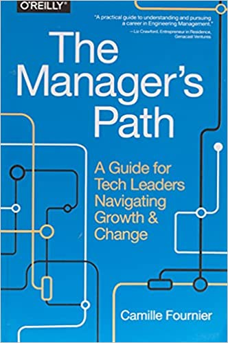

Marketing
Recalibrating
-
Jess now needs to redefine "productive"
-
What do we need?
- And who is "we", exactly?
- How are we going to build it?
- What aren't we going to build?
- Who's going to do the work?
- How will people know?
The Good News

- You don't have to invent this yourself
- [[Fournier2017](b:Fournier2017)]
- https://www.askamanager.org/

On Beyond Engineering
| Department | Also Called | What It Does |
|---|---|---|
| Marketing | Awareness | Making people aware of who you're trying to help and how |
| Sales | Adoption | Getting people from "this looks interesting" to "we're using it" |
| Support | Success | Removing roadblocks and providing help |
| Human Resources | Community | Peer support and gathering feedback |
| Product Management | --- | Translate user pain into feature lists |
| Project Management | --- | Who should be working on what right now and what's stopping them |
Another Way to Look At It
| Department | What Risk It Addresses |
|---|---|
| Marketing |
People don't know we exist or how we can help |
| Sales |
It's too hard to start using what we build |
| Support |
It's too hard to keep using what we build |
| Human Resources |
We don't have the right people to do the work |
| Product Management | We're building the wrong thing |
| Project Management | People aren't working on the right things or aren't working well together |
Marketing
Making sure that the people who ought to know how you can make their lives better actually do know.
- If what you offer isn't actually useful, this relies on psychological tricks
- Manufacturing desire
- If what you offer is useful, the challenges are:
- Thinking like someone else
- Being heard above the noise
- Your actual product is your grant proposals [Kuchner2011]
- That's what people give you money for
- Your papers are "just" proof that you're worth funding
- Because funders have a signal-to-noise problem too
You Are Not Your Users
- Person writing a paper:
- Are the error bars right?
- Do my co-authors agree with the conclusions?
- Will this be accepted before someone else gets the same result?
- Person reading a paper:
- Did the authors cite my work?
- Does this paper support my current research direction?
- Can I use their data or software to speed up my work?
Personas
A made-up surrogate for part of your community
Dalha, 58, is a professor in geophysics and the Dean of Science at Euphoric State University. She is evaluated annually on (a) how many high-citation publications faculty produce, (b) whether research funding is increasing year-on-year, and (c) how many of the university's PhD graduates are offered tenure-stream positions at top-10 schools. Dalha is passionate about getting more young women into STEM, and worried by the number of faculty and grad students who are leaving the university for industry.
Crafting Your Message
| For | description of target audience |
| who want | statement of their needs, |
| project name | |
| provides | statement of key benefits. |
| Unlike | alternative solution, |
| we | key differentiator. |
Crafting Your Message
| For | post-docs, junior faculty, and industry equivalents |
| who want | to manage research software projects, |
| this workshop | |
| provides | an introduction to key non-technical skills. |
| Unlike | orientation sessions for new faculty and project management courses in industry, |
| we | focus on topics particularly relevant to open science. |
Personas and Pitches
Create personas and pitches for any two of the following
- Student: "What am I going to do with my life?"
- Junior researcher: "How am I going to get a permanent position?"
- Senior researcher: "How can I land my next big grant?"
- Funder: "How can I have the most impact for the least risk?"
- Provost: "How can I attract the best talent?"
- Reporter: "How can I find stories people will pay to read?"
- General public: "How can I get answers I understand?"
- Policymaker: "How can I make the right decision quickly?"